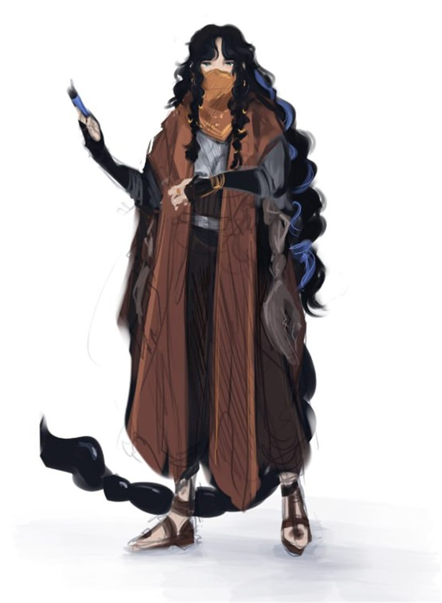

Гуманоидный скорпион, невысокий, светлокожий кочевой народ Аль'Ваэра. Когда-то у акрабимов, по их заверениям, было своё царство в дюнах Красных Песков — Золотой Улей, чьи купола сверкали, как хитиновые панцири. Однако сегодня оно разрушено, и большинство из них путешествуют по северной части Аль'Ваэра. Они кочуют по пустыням и городам, продавая найденные или созданные во время странствий диковинные безделушки.
Они приходят с пением песков — стройные, с кожей цвета застывшего молока, чьи силуэты сливаются с дюнами. Их тела — гимн выживанию. У одних за спиной изгибаются хвосты, увенчанные жалом, острым как игла факира. У других — клешни, способные дробить камень или вырезать филигранные узоры. Глаза их, узкие и блестящие, видят тепловые следы даже в кромешной тьме. Когда они шевелятся, их хитиновые пластины шелестят, словно пересыпается песок в часах.
Акрабимы более охотно общаются с другими народами, нежели иные кочевые племена. К ним относятся более лояльно, но всё равно не желают подолгу останавливаться в городах, считая их слишком тесными. Их терпят, даже уважают — но лишь до заката. Как только тени начинают ползти по стенам, акрабимы сворачивают лагерь. Каменные стены давят им грудные пластины, шум толпы режет усики, улавливающие малейший шёпот ветра.
Их повозки, гружённые странными артефактами, останавливаются у ворот городов: здесь продают светящиеся каменные цветы, флаконы с «дыханием дюн» — эссенцией, вызывающей видения прошлого, и браслеты из сплавленного песка.
Приверженцы Старой религии. Старейшины племён до сих пор показывают детям карты, нарисованные на высушенных желудках гамальдов: «Вот здесь стоял Золотой Улей, наш дом». Молодёжь смеётся, считая это сказкой, но по ночам тайком копает песок, надеясь найти обломок легендарной «Песни Скорпиона» — арфы, игравшей голосами мёртвых царей.
Акрабимы разделяют несколько общих особенностей.
| Особенность | Описание |
|---|---|
| Увеличение характеристик | Значение вашей Харизмы увеличивается на 2, а значение Телосложения увеличивается на 1. |
| Возраст | Взрослеют как махребы и живут до 70 лет. |
| Размер | По росту и телосложению меньше махребы. Ваш размер — Средний. |
| Скорость | Ваша базовая скорость ходьбы составляет 30 футов. |
| Тёмное зрение | На расстоянии в 60 футов вы при тусклом освещении можете видеть так, как будто это яркое освещение, и в темноте так, как будто это тусклое освещение. В темноте вы не можете различать цвета, только оттенки серого. |
| Чувство вибрации | Вы можете воспринимать своё окружение в пределах 10 футов, полагаясь на чувство вибрации. |
| Чувствительность к солнечному свету | Вы совершаете с помехой броски атаки и проверки Мудрости (Восприятие), основанные на зрении, если вы, цель вашей атаки или изучаемый предмет расположены на прямом солнечном свете. |
| Иммунитет к яду акрабимов | Вы обладаете иммунитетом к урону ядом и состоянию отравленный, если этот яд акрабима. Вы кидаете с преимуществом спасброски телосложения от состояния отравления. |
| Парирование клешнями | Ваши хитиновые клешни позволяют иногда парировать атаки противника. Вы получаете +1 к КД, пока не носите тяжёлый доспех. |
| Языки | Вы можете говорить, читать и писать на акрабимском языке и ещё одном языке на ваш выбор. |
На 5-м уровне вы можете выбрать одну из описанных ниже особенностей:
| Особенность | Описание |
|---|---|
| Ядовитый укол | Действием вы можете атаковать своим хвостом, нацелившись на одно существо, находящееся на расстоянии 5 футов от вас. Цель получает 2к10 урона ядом при попадании. Этот урон увеличивается на 1к10 на 11 (3к10) и 17 (4к10) уровнях. Вы можете использовать эту особенность количество раз, равное вашему модификатору Телосложения (минимум один раз). Вы восстанавливаете данную особенность после окончания продолжительного отдыха. |
| Клешни скорпиона | У вас есть две дополнительных клешни, которые растут вместе с вашими руками. Каждый из этих придатков является естественным оружием, которое вы можете использовать для совершения безоружной атаки. Если вы попадаете ими, то цель получает дробящий урон в размере 1к6 + ваш модификатор Силы. Сразу же после попадания вы можете попытаться схватить цель бонусным действием. Эти клешни не могут с чем-то взаимодействовать или держать оружие, магические предметы и другое специальное снаряжение. |
{kind=link}